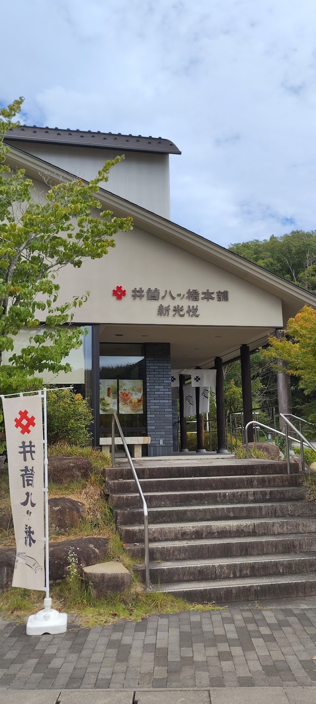
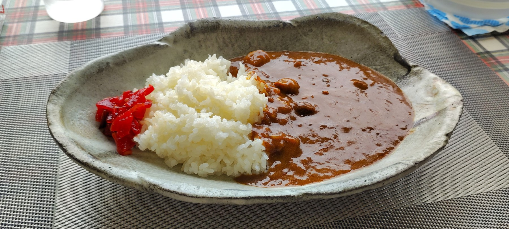
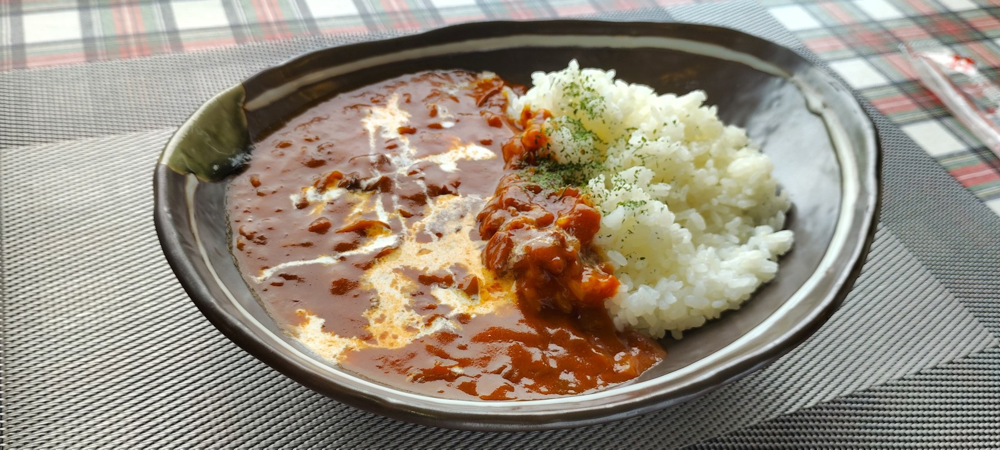
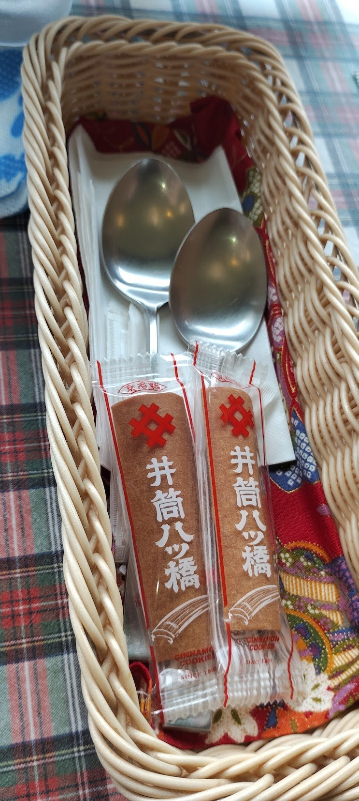
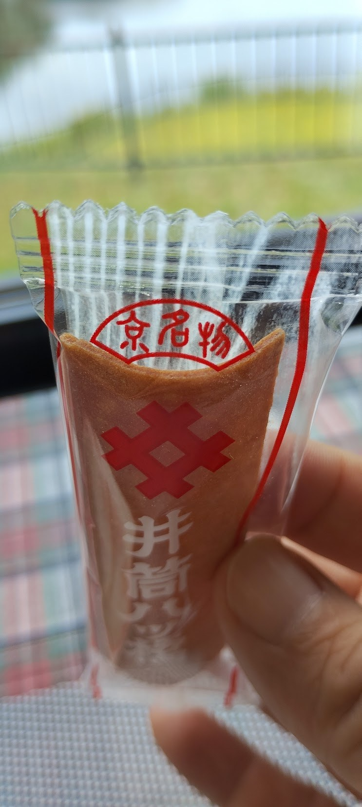
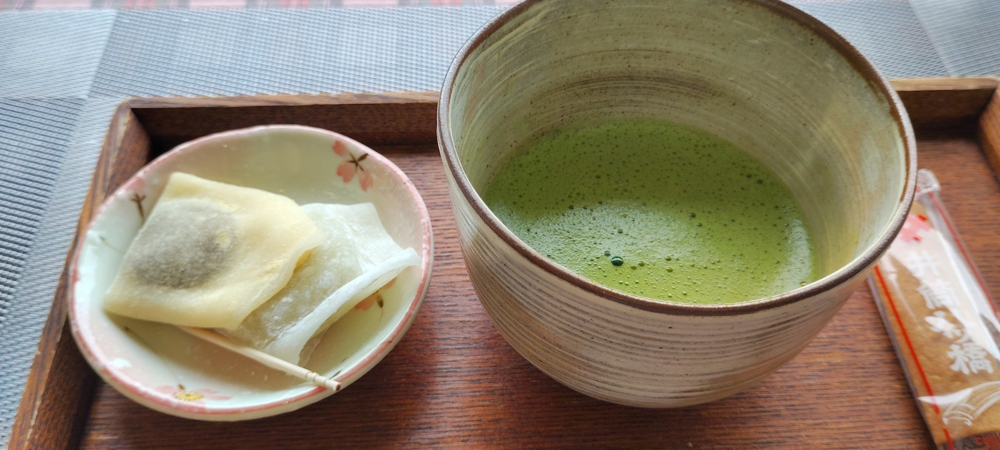
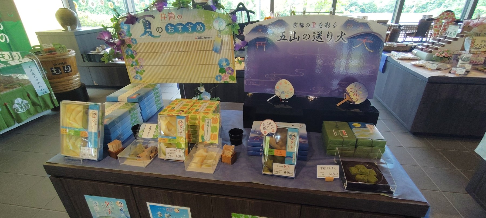
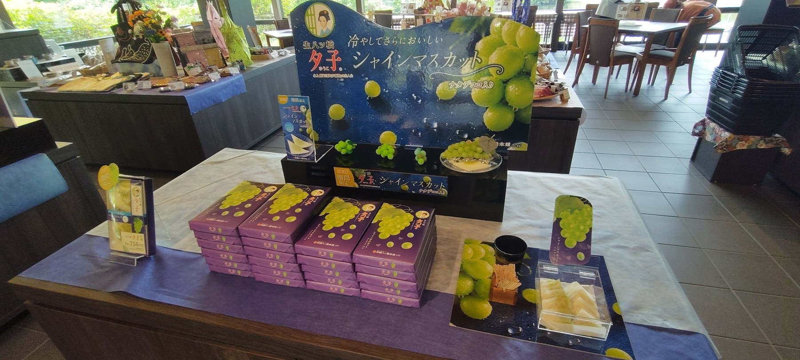
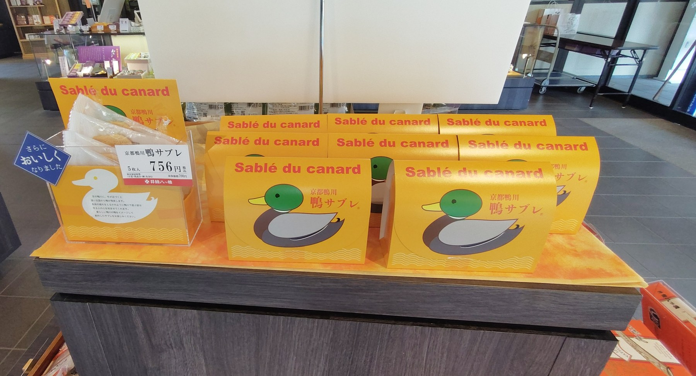

ろぶーの気になる事 ／ 京都・南丹の立ち寄り旅
井筒八ッ橋本舗
新光悦店へドライブランチと抹茶、お土産選びを楽しんできた
この記事にはアフィリエイト広告が含まれます。
こんにちは、ろぶーです。
今回は、八ッ橋を食べに……というより、ちょっとランチを楽しみたくて。気晴らしのドライブを兼ねて、京都府南丹市の「井筒八ッ橋本舗 新光悦店」へ行ってきました。
「夕子」でおなじみのお店ですが、今回は喫茶でカレーやハヤシライスをいただき、抹茶でひと息。そのあとは売り場でお土産選びも楽しんできました。
大阪から南丹へ、気晴らしのドライブ
今回、私の出発地点からは、高速道路を使っても一般道でも所要時間の目安はおよそ1時間。「それなら一般道で行こう」と、のんびり向かうことにしました。大阪のどこから出発するかや道路の混み具合によって、時間は変わります。
到着したのは、井筒八ッ橋本舗の新光悦店。公式サイトでも製造工場を併設する店舗として紹介されています。お店に入ると八ッ橋をいただいて、早くもワクワク。とはいえ、まずはランチが目的なので、奥の喫茶へ直行です。

八ッ橋のお店でカレーとハヤシライス
今回のランチはこちら。八ッ橋のお店で、こんな食事も楽しめるんですね。
カレーライス

カレーはしっかりスパイシーで、お肉の感じもよく、おいしくいただきました。細かく刻まれた具材も入っています。
甘口ではなく、私には中辛くらいに感じられる辛さ。スパイスを楽しみつつ、大人には食べやすい味わいだと思いました。
ハヤシライス

そして、ちょっとうれしかったのがスプーンのかご。スプーンやおしぼりと一緒に、個包装の井筒八ッ橋が入っていました。


ランチに八ッ橋が1枚添えられているのが、うれしかったです。このちょっとした心遣いがいいですね。八ッ橋のお店で食べているんだな、と感じるひとコマでした。
食後は抹茶と生八ッ橋でひと息

ランチのあとは抹茶セットも。お抹茶のいい香りと一緒に、黄桃とシャインマスカットの生八ッ橋をいただきました。
八ッ橋というと、あんを包んだ定番の生八ッ橋を思い浮かべますが、果物の味を楽しめるものもあるんですね。食事から甘いものまで、ひとつのお店でゆっくりできました。
季節の夕子を見ながら、お土産選び
食後は売り場へ。訪問時には黄桃や青りんご、シャインマスカットなどが並び、試食できるものもありました。近くにはお茶の機械もあって、味を確かめながら選べたのがうれしいところです。


写真にはありませんが、ミルキー味も気になるところ。今回は試食できませんでしたが、以前に購入したことがありました。定番だけでなく、こうした味の違いを見るのもお土産選びの楽しみですね。
鴨のイラストがかわいい「鴨サブレ」

こちらは「鴨サブレ」。鴨のイラストがかわいくて、思わず目が留まりました。八ッ橋を見に来たつもりが、売り場を歩くとほかのお菓子にも目がいきます。
写真の商品、価格、試食、食事の内容は訪問時の記録です。季節や販売状況によって変わります。
井筒八ッ橋本舗 新光悦店の店舗情報
- 所在地
- 京都府南丹市園部町瓜生野京都新光悦村12
- 営業時間
- 平日 10:00〜15:00／土日祝 10:00〜17:00
- 定休日
- 木曜日
- 電話
- 0771-68-2800
- 公式案内
- 井筒八ッ橋本舗 店舗情報
店舗情報は2026年9月23日に公式サイトで確認しました。上記は店舗の営業時間です。喫茶の提供時間やメニューは、訪問前にお店へご確認ください。
今回は、気晴らしのドライブから始まった新光悦店への寄り道。ランチを食べて、抹茶と生八ッ橋を楽しんで、最後はお土産を眺める。八ッ橋を買うだけではない過ごし方ができました。
京都へ出かける機会があれば、井筒八ッ橋本舗のお店にも足を運んでみてください。南丹方面へのドライブなら、新光悦店も立ち寄り先のひとつになりそうです。
遠方の方は、お取り寄せも
お店まで行くのが難しい方は、楽天市場で井筒八ッ橋本舗の商品を探す方法もあります。商品名、販売店、賞味期限、送料を見ながら選んでみてください。
楽天市場で井筒八ッ橋本舗を探す上のボタンは楽天アフィリエイトの広告リンクです。リンクを通じた購入により、当サイトに報酬が入る場合があります。
参考にした公式情報
本文の訪問体験と写真：ろぶー。